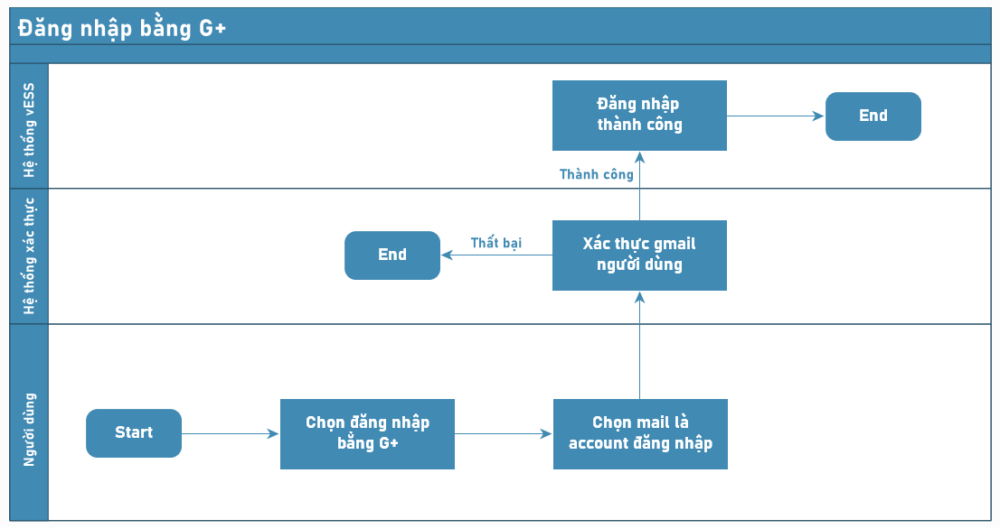
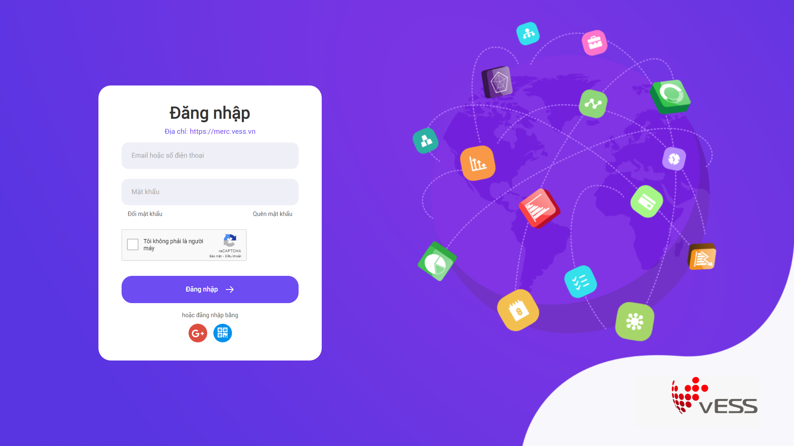
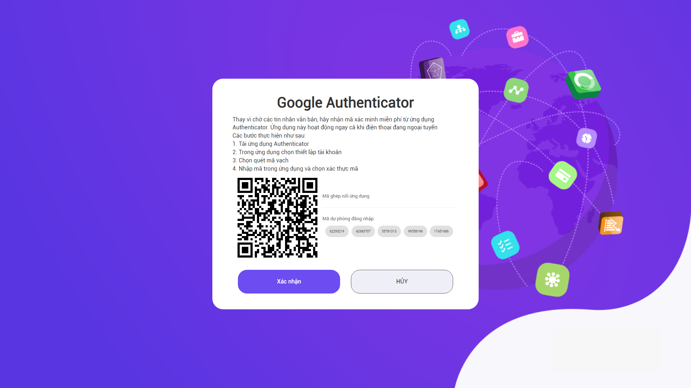
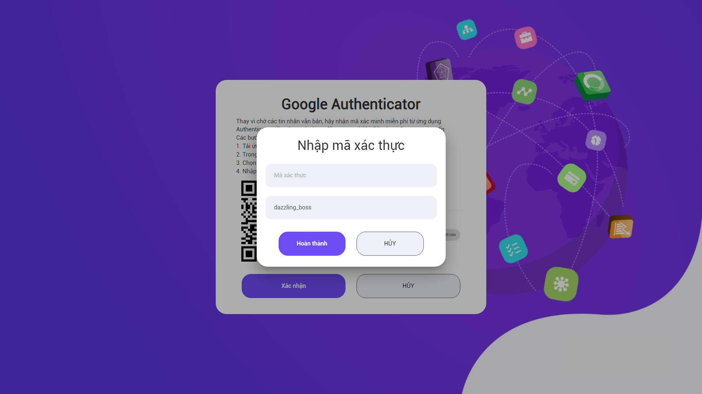
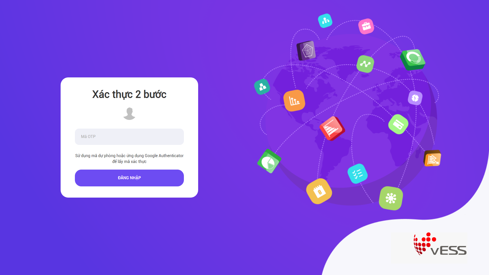
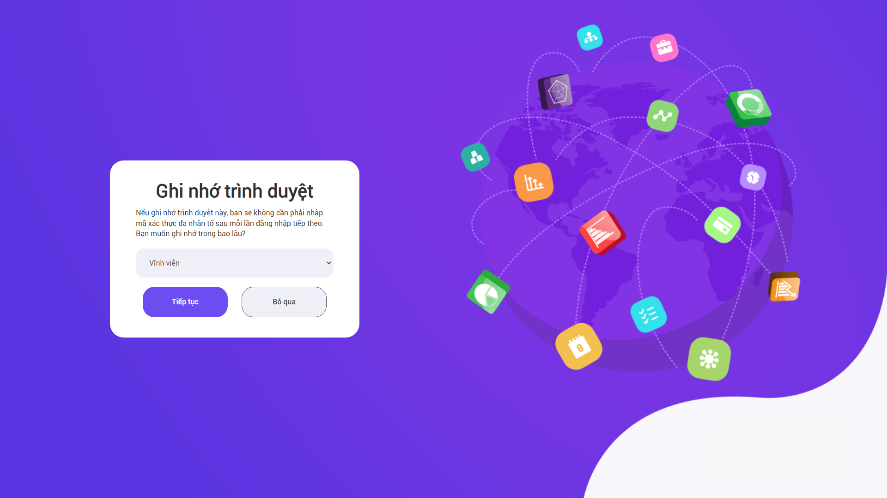
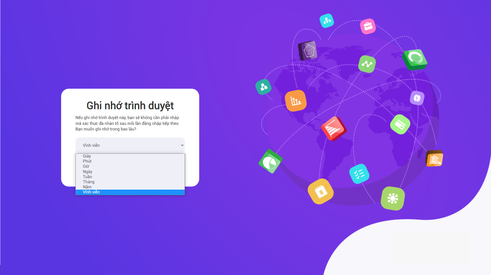

Đăng nhập Google+
Quy trình nghiệp vụ
Đăng nhập bằng G+ là tính năng hỗ trợ người dùng đăng nhập hệ thống bằng tài khoản gmail qua xác thực G+, giảm thiểu thời gian nhập user/password trên màn hình đăng nhập truyền thống.
Quy trình

Các luồng quy trình Phê duyệt trên Web
- Đăng nhập bằng G+. Chi tiết nghiệp vụ tại đây.
Mô tả nghiệp vụ
Người dùng có nhu cầu đăng nhập nhanh hơn mà không cần nhập user/password nhiều lần, có thể thực hiện đăng nhập bằng G+ qua quy trình đơn giản như sau:
-
Người dùng nhấn chọn đăng nhập bằng G+.
-
Thực hiện xác thực qua Google Authenticator để sử dụng chức năng.
Luồng chức năng chính
- Đăng nhập bằng G+. Chi tiết nghiệp vụ tại đây.
Đăng nhập bằng G+
Đối tượng thực hiện: Người dùng
-
Vào màn hình Đăng nhập. Nhấn chọn

-
Sau khi nhấn chọn đăng nhập bằng G+, màn hình hiển thị cho phép người dùng chọn gmail để đăng nhập hệ thống.
- Nếu chưa có gmail trên trình duyệt, người dùng sẽ cần đăng nhập gmail để sử dụng tiếp chức năng.
- Khi đã chọn/ nhập gmail có tài khoản trên hệ thống, màn hình hiển thị cho phép người dùng quét mã QR để xác thực qua Google Authenticator:

-
Người dùng vào ứng dụng Google Authenticator trên mobile, quét mã bằng tài khoản gmail tương ứng vừa đăng nhập.
-
Sau khi có quét mã, tiếp tục nhấn Xác nhận, màn hình hiển thị cho cho phép nhập mã:

- Người dùng nhập mã và nhấn Hoàn thành
Lưu ý: Bước 2 chỉ áp dụng đối với người mới sử dụng tính năng đăng nhập bằng G+ lần đầu tiên. Từ lần thứ 2 trở đi, người dùng sẽ được bỏ qua bước này. Sau khi nhấn chọn đăng nhập G+ màn hình sẽ hiển thị luôn bước thứ 3: Xác thực 2 bước.
-
Xác thực 2 bước:
- Người dùng tiếp tục nhập mã đã được gửi về Google Authenticator trên mobile

- Nhấn Đăng nhập
-
Chọn thời lượng ghi nhớ đăng nhập G+
- Khi đã xác thực đúng mã Google Authenticator, hệ thống tiến hành cho phép người dùng lựa chọn thời gian lưu đăng nhập:

- Màn hinh hiểu thị mặc định Vĩnh viễn. Người dùng có thể thay đổi thời gian bằng nhiều lựa chọn khác:

-
Thời gian lưu đăng nhập bằng G+ sẽ tương ứng với thời gian người dùng lựa chọn:
-
Nếu chọn Vĩnh viễn: Hệ thống ghi nhớ mã xác thực của người dùng và khi người dùng đăng nhập bằng G+ lần sau, hệ thống sẽ được đăng nhập không cần nhập mã xác thực.
-
Nếu chọn mức độ thời gian khác nhau (Giờ, phút,...), thì khi hết thời gian, người dùng đăng nhập bằng G+ sẽ cần nhập mã xác thực lại lần sau.
-
-
Lưu ý: Nếu người dùng nhấn Bỏ qua, người dùng sẽ luôn phải xác thực bằng 2 bước (từ bước 3).
-
Nhấn Tiếp tục, người dùng sẽ đăng nhập hệ thống thành công.